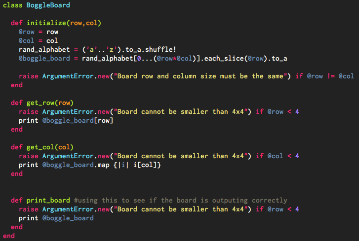

CHRISTOPHER HUI
9/25/2014
4:56 PM
You may or may not have caught that cheesy pun in the title, but we will be talking about the use of classes in Ruby. I will be explaining when, why, and how to use classes in Ruby. From there, I will present an example that will show how data structures and classes can model a real-world object.
Classes are a type of object within Ruby. Class objects are used to store information into a convenient bundle. You can create a class by prefixing the object name with class, e.g. "class Dog”. When you create a class, you are able to package together methods conveniently. For example, if you wanted to create an object that is a dog, you could bundle together methods that represent different dog characteristics into a class. Generally speaking, a class consists of a collection of methods.
Instance Variables are commonly used within classes. Instance variables are denoted with the prefix “@“. Instance variables are commonly used within class objects because the variable is shared across the entire class. Local variables are only available within the method that it is defined in. Instance variables can be called upon by different methods, as long as they are within the same class. The scope of the instance variable is what separates it from local variables.
Don’t worry if you’re still confused. I tend to learn better looking at examples rather than by reading plain text. So let’s go ahead and look at an example!
This is a piece of code that was used for for one of my challenges during Phase 0 of Dev Bootcamp. With that said, My line of code probably isn’t that good, but it’s intent is to show how classes and instance variables work. So don’t be too critical of my code, please!
As you probably noticed, I have a class called “BoggleBoard” and four methods nested within that class. I have these four methods nested under the class “BoggleBoard” because they are all related and have relevant information to the Boggle Board. The method “initialize" takes the two arguments “rol” and “col”. There arguments will represent the rows and columns in the boggle board. Underneath that, I created instance variables of “row”, “col”, and “boggle_board" so that those variables can be accessed by the other three methods in the class. The second method “get_row” serves the purpose of grabbing the letters in a particular row. The third method “get_col” serves the purpose of grabbing the letters in a particular column. The fourth method “print_board” serves the purpose of printing out the entire boggle board. Each of these methods use at least one of the instance variables defined earlier.
This is all the time I have now to cover this topic. Hopefully sometime in the future I can go into further detail about these topics. I hope this little blog post clears up any confusion you had previously. As I have mentioned before, I tend to learn better by reading examples and implementing these topics in my own code. With that said, go ahead and try to create classes and instance variables!